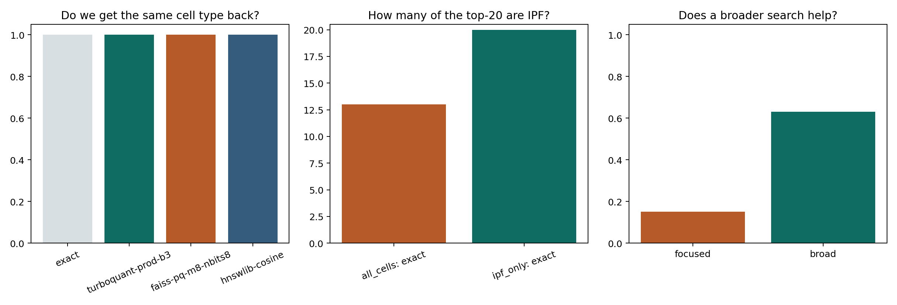

Tutorials
Practical entry points for first runs and worked examples.
Open TutorialsIt combines compressed candidate generation with exact reranking in the original embedding space, and it ships with executed benchmark articles, wet-lab-friendly walkthroughs, and reproducible artifacts.
Practical entry points for first runs and worked examples.
Open TutorialsHow to think about data, queries, reports, and interpretation.
Open GuidesPackage surface area, classes, and CLI usage.
Open APIExecuted case studies and measured scenario articles.
Open BenchmarksHow to contribute safely to the project.
Open ContributingCitations, dataset provenance, and external links.
Open References
The easiest entry point for wet researchers and collaborative teams.
Open guide
The current strongest executed success case for TurboQuant.
Open article